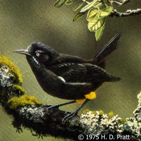

How do you identify inspirations?
Inspirations are found everywhere and anywhere. Usually, inspirations are found in the "huh" moments. The moments where someone says a unique phrase or does something unusual. Inspiration can be found in your average, "normal" moments too. No matter how unusual, however, the important thing is that an inspiration makes you stop for a second and think, until someone/something snaps you back into reality. It's as simple as that.
Tip: Keep a small notebook/journal with you. At any moment, you can write down the random inspiration that struck before you forget it. If that's too cumbersome, use the notes application on your phone.
Example: David E. Kelly (writer of Big Little Lies) got his inspiration for the opening scene of Mr. Mercedes from an overheard conversation in a McDonald's parking lot. Two women were talking. One of them was telling a story about her pet snake. The snake was getting longer and longer, but wasn't eating at all. The woman was worried about the snake and took it to the vet. The vet then asked the woman if the snake slept in the bed with her. She replied, "Yes." To which the vet replied, "It's preparing to eat you." David E. Kelly took this snake and made it into a scene where 16 people are murdered as a criminal drives through a line of people waiting to enter the unemployment office.
Personal Example: When I was in middle school, I watched a documentary about extinct animals in Hawaii. One of which, was a small species of bird, called the Kaua'i 'O'o. They've gone extinct three times. So, taking that inspiration, I created my own feature film entitled Oh Oh.
How do you make an inspiration into a story/scene?
The important thing to remember is that an inspiration is an inspiration, and just that. I've seen writers, especially new ones, try to copy the thing that inspired them. You have to make it your own, just as David E. Kelly made the snake into a line of waiting pedestrians. Let's say you want to write a story inspired by a family member's experiences. Well, it's likely that you'll have to do a bit of change to make a successful story. Instead of copying everything word-for-word, try dramatizing certain events, cutting out certain characters, speeding up certain events, and embellishing what might be too drab.
Personal Example: My initial story idea for Oh Oh was to take the exact history of the 'O'o birds and follow it as an animated, children's movie following one particular 'O'o family, kind of like Rio. It was too similar to my inspiration though. It didn't work out because of how general the idea felt, and how little fiction was in it plot-wise. So, I decided to start anew and followed a new story. Now, my movie is a what-if story about the prospect of the 'O'os populating for the third time after being named extinct, told by the family of researchers who named them extinct in the first place.
This happens with adaptations, as well. Sometimes sub-plots and/or characters in a book/play/etc must be cut to be adapted for the screen successfully. We see this often.
Example: In the Hunger Games, the character Madge Undersee, aka the narrator's best friend, is cut from the movie because she doesn't have much purpose in the book besides making the narrator more likeable/warm and to introduce the narrator's MacGuffin: a pin shaped like a mockingjay. Rather than introduce a new, small character, the screenwriters cut Madge and replaced her with other small moments. The pin was given to the narrator in a market by a kind old woman, and the narrator was made more likeable by an added scene wherein the narrator comforted their kid sister.
Tools for Creating an Initial Story:
Here are some simple things you can do to bring your initial story together. These tools will also lead you into creating your treatment/outline.
- Story-boarding: Draw some sketches of major moments. This might help you visualize the movie and help you decide on the overall artistic vision.
- Timeline: Create an EXACT timeline for your story. In it, record every major time stamp (ie. character birthday, flashback dates, the days/months/years story is taking place, etc).
- Name Generation: Giving your major characters names can help you identify central themes and streamline the process. Try naming your characters based on the origins and meanings of a possible name.